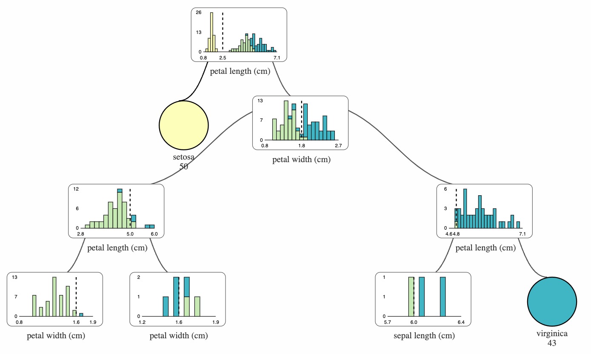
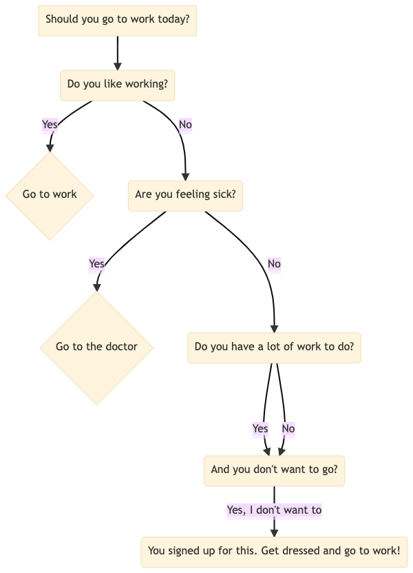
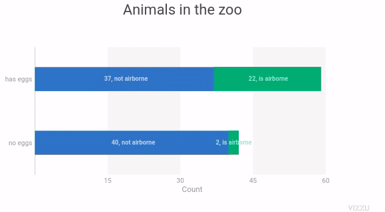
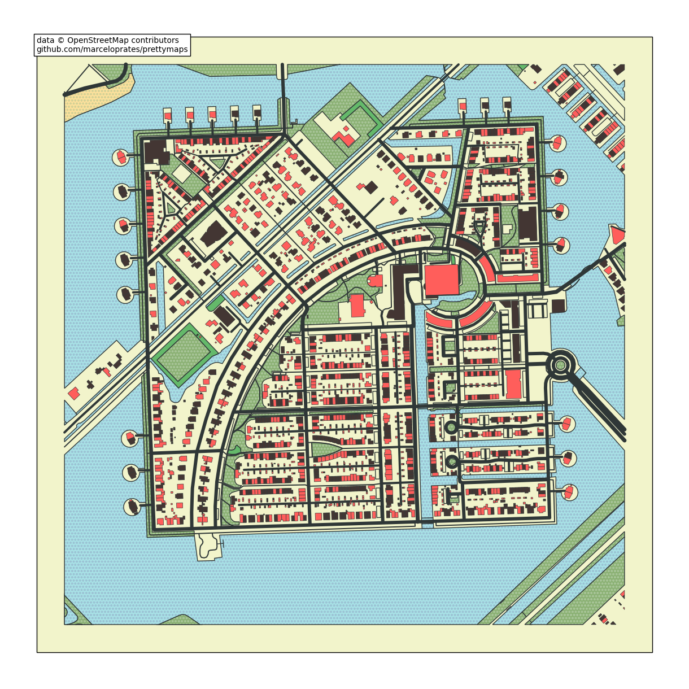

6.10. Visualization#
This section covers some tools to visualize your data and model.
6.10.1. Use Seaborn Style on Matplotlib Plots#
Seaborn style looks nicer than the default style of matplotlib, but matplotlib is more customizable. If you want to apply seaborn style on matplotlib plots, use seaborn.set_theme().
import matplotlib.pyplot as plt
import numpy as np
import seaborn as sns
# Set seaborn style
sns.set_theme()
# Data for plotting
t = np.arange(0.0, 2.0, 0.01)
s = 1 + np.sin(2 * np.pi * t)
# Plot the data
plt.figure(figsize=(7, 5))
plt.plot(t, s)
plt.show()
6.10.2. Graphviz: Create a Flowchart to Capture Your Ideas in Python#
Show code cell content
!pip install graphviz
Visualizing complex data and systems is difficult. Creating diagrams by hand is slow and prone to mistakes, especially with large datasets.
Graphviz offers an easy method to generate graphs using a declarative language.
Here’s a short code example to demonstrate the utility of Graphviz:
from graphviz import Graph
# Instantiate a new Graph object
dot = Graph('Data Science Process', format='png')
# Add nodes
dot.node('A', 'Get Data')
dot.node('B', 'Clean, Prepare, & Manipulate Data')
dot.node('C', 'Train Model')
dot.node('D', 'Test Data')
dot.node('E', 'Improve')
# Connect these nodes
dot.edges(['AB', 'BC', 'CD', 'DE'])
# Save chart
dot.render('data_science_flowchart', view=True)
dot
6.10.3. folium: Create an Interactive Map in Python#
Show code cell content
!pip install folium
If you want to create a map provided the location in a few lines of code, try folium. Folium is a Python library that allows you to create an interactive map.
import folium
m = folium.Map(location=[45.5236, -122.6750])
tooltip = 'Click me!'
folium.Marker([45.3288, -121.6625], popup='<i>Mt. Hood Meadows</i>',
tooltip=tooltip).add_to(m)
m
View the document of folium here.
6.10.4. dtreeviz: Visualize and Interpret a Decision Tree Model#
Show code cell content
!pip install dtreeviz
If you want to find an easy way to visualize and interpret a decision tree model, use dtreeviz.
from dtreeviz.trees import dtreeviz
from sklearn import tree
from sklearn.datasets import load_wine
wine = load_wine()
classifier = tree.DecisionTreeClassifier(max_depth=2)
classifier.fit(wine.data, wine.target)
vis = dtreeviz(
classifier,
wine.data,
wine.target,
target_name="wine_type",
feature_names=wine.feature_names,
)
vis.view()
The image below shows the output of dtreeviz when applying it on DecisionTreeClassifier.

6.10.5. supertree: Interactive Decision Tree Visualization for Python#
Show code cell content
!pip install supertree
Visualizing complex decision trees with static plots can make it hard to analyze and explain model decisions.
supertree is a Python package that addresses this by providing interactive and user-friendly decision tree visualizations within notebooks.
Key features include:
Zooming and panning through large trees
Collapsing and expanding selected nodes
from sklearn.tree import DecisionTreeClassifier
from sklearn.datasets import load_iris
from supertree import SuperTree # <- import supertree :)
# Load the iris dataset
iris = load_iris()
X, y = iris.data, iris.target
# Train model
model = DecisionTreeClassifier()
model.fit(X, y)
# Initialize supertree
super_tree = SuperTree(model, X, y, iris.feature_names, iris.target_names)
# show tree in your notebook
super_tree.show_tree()

6.10.6. HiPlot - High Dimensional Interactive Plotting#
Show code cell content
!pip install hiplot
If you are tuning hyperparameters of your machine learning model, it can be difficult to understand the relationships between different combinations of hyperparameters and a specific metric.
That is when HiPlot comes in handy. HiPlot allows you to discover patterns in high-dimensional data using parallel plots like below.
import hiplot as hip
data = [{'lr': 0.001, 'loss': 10.0, 'r2': 0.8, 'optimizer': 'SGD'},
{'lr': 0.01, 'loss': 2.5, 'r2': 0.9, 'optimizer': 'Adam'},
{'lr': 0.1, 'loss': 4, 'r2': 0.86, 'optimizer': 'Adam'}]
hip.Experiment.from_iterable(data).display()
6.10.7. missingno.dendogram: Visualize Correlation Between Missing Data#
Show code cell content
!pip install missingno sklearn
Missing values can sometimes tell you how strongly the presence or absence of one variable affects the presence of another. To visualize the correlation between different columns based on the missing values, use missingno.dendogram.
from sklearn.datasets import fetch_openml
soybean = fetch_openml(name="soybean", as_frame=True)['data']
import missingno as msno
msno.dendrogram(soybean)
The dendrogram uses a hierarchical clustering algorithm to bin variables against one another by their nullity correlation. Cluster leaves which linked together at a distance of zero fully predict one another’s presence. In the graph above, the nullity of seed-discolor fully predicts the nullity of germination.
6.10.8. matplotlib-venn: Create a Venn Diagram Using Python#
Show code cell content
!pip install matplotlib-venn
If you want to draw a venn diagram using Python, try matplotlib-venn. To create a venn diagram using matplotlib-venn, you can specify the size of each region:
import matplotlib.pyplot as plt
from matplotlib_venn import venn2
venn2(subsets = (8, 10, 5), set_labels = ('Are Healthy', 'Do Exercise'))
plt.show()
… or specify the elements in each set:
venn2([set(['A', 'B', 'C', 'D']), set(['D', 'E', 'F'])], set_labels=['Group1', 'Group2'])
plt.show()
You can also draw three cicles using venn3:
from matplotlib_venn import venn3
venn3(subsets = (5, 5, 3, 5, 3, 3, 2), set_labels = ('Are Healthy', 'Do Exercise', 'Eat Well'))
plt.show()
6.10.9. squarify: Plot Treemap in Python#
Show code cell content
!pip install squarify
A treemap splits a rectangle into sub-rectangles, whose sizes are proportional to their values. To plot a treemap in Python, use squarify.
import matplotlib.pyplot as plt
import squarify
import pandas as pd
df = pd.DataFrame({'count': [8, 4, 3], 'role': ['DS', 'DE', 'DA']})
# Plot
squarify.plot(sizes=df['count'], label=df['role'])
plt.axis('off')
plt.show()
6.10.10. UMAP: Dimension Reduction in Python#
Show code cell content
!pip install 'umap-learn[plot]'
It can be difficult to visualize a multi-dimensional dataset. Luckily, UMAP allows you to reduce the dimension of your dataset and create a 2D views of your data.
To understand how UMAP works, let’s try with the fruit dataset. In this dataset, we have the features of different fruits, such as mass, width, height, and color score. Our task is to classify which fruit a sample belongs to based on its features.
import warnings
warnings.simplefilter(action='ignore', category=FutureWarning)
from sklearn.preprocessing import StandardScaler
import matplotlib.pyplot as plt
import seaborn as sns
import pandas as pd
%matplotlib inline
Let’s start with loading and visualizing the data.
data = pd.read_table("https://raw.githubusercontent.com/susanli2016/Machine-Learning-with-Python/master/fruit_data_with_colors.txt")
data.head(10)
sns.pairplot(data.drop(columns=['fruit_label', 'fruit_subtype']), hue='fruit_name')
plt.show()
We can see some distinctions between different fruits in the pairwise feature scatterplot matrix. Now to visualize all 4 features in a 2D plot, we start with creating a UMAP object.
import umap
reducer = umap.UMAP()
Next, we scale the features so that they are all on the same scale.
features = data.iloc[:, 3:].values
scaled_features = StandardScaler().fit_transform(features)
Lastly, we use the UMAP object to reduce the dimension of the dataset and plot the features as a scatter plot.
embedding = reducer.fit_transform(scaled_features)
embedding.shape
pd.DataFrame(embedding, columns=['Dimension 1', 'Dimension 2']).to_csv('~/Downloads/embedding.csv')
plt.style.use('dark_background')
colors = ["#72BEFA", "#E583B6", "#72FCDB", "white"]
color_list = [colors[label - 1] for label in data.fruit_label]
plt.scatter(
embedding[:, 0],
embedding[:, 1],
c=color_list,
s=80,
)
plt.show()
Now we can see some distinctions in features between 4 different fruits in a 2D plot.
6.10.11. Evidently: Detect and Visualize Data Drift#
Show code cell content
!pip install evidently
Data drift is unexpected changes in model input data that can lead to model performance degradation. Since your code is built around the characteristics of your data, it is important to detect data drift when it occurs. Evidently allows you to do exactly in a few lines of code.
In the code below, we use Evidently to detect changes in feature distribution.
import pandas as pd
from sklearn import datasets
from evidently.dashboard import Dashboard
from evidently.tabs import DataDriftTab
california = datasets.fetch_california_housing()
california = pd.DataFrame(california.data, columns = california.feature_names)
california_data_drift_report = Dashboard(tabs=[DataDriftTab])
california_data_drift_report.calculate(california[:1000], california[1000:], column_mapping = None)
california_data_drift_report.show()

Find other features of Evidently here.
6.10.12. Mermaid: Create Class Diagrams for Your Python Classes Using Text and Code#
If you want to create class diagrams to explain your Python classes, use Mermaid. Mermaid lets you create diagrams and visualizations using text and code.
For example, writing this piece of code on Mermaid Live Editor:
classDiagram
Animal <|-- Dog
Animal <|-- Cat
Animal <|-- Fish
Animal : int age
Animal : str gender
Animal: is_mammal()
Animal: is_pet()
class Dog{
str fur_color
bark()
run()
}
class Cat{
str fur_color
meow()
run()
}
class Fish{
str scale_color
swim()
}
… will create a diagram like below:

6.10.13. Mermaid: Create Flow Chart Using Code#
Mermaid also allows you to create a flow chart using simple code logic.
For example, writing this piece of code on Mermaid Live Editor:
graph TD
A[Should you go to work today?] --> B(Do you like working?)
B --Yes--> C{Go to work}
B --No--> D(Are you feeling sick?)
D --Yes--> E{Go to the doctor}
D --No--> F(Do you have a lot of work to do?)
F --Yes--> H(And you don't want to go?)
F --No--> H
H --Yes, I don't want to-->I(You signed up for this. Get dressed and go to work!)
… will create a diagram like below:

Find other diagrams you can create with Mermaid here.
6.10.14. pretty-confusion-matrix: Plot a Pretty and Comprehensible Confusion Matrix#
Show code cell content
!pip install -U pretty-confusion-matrix
It can be difficult to understand a confusion matrix, especially when there are many classes in the target.
import numpy as np
from sklearn.metrics import confusion_matrix
y_test = np.array([1, 2, 3, 4, 5])
prediction = np.array([3, 2, 4, 3, 5])
confusion_matrix(y_test, prediction)
To make your confusion matrix prettier and easier to understand, use pretty_confusion_matrix.
from pretty_confusion_matrix import pp_matrix_from_data
cmap = 'PuRd'
pp_matrix_from_data(y_test, prediction, cmap=cmap)
6.10.15. matplotx: Useful Extensions for Matplotlib#
Show code cell content
!pip install matplotx[all]
Have you ever wanted to create matplotlib plot in dark mode? If so, use matplotx.
For example, to use Dracula style, add:
plt.style.use(matplotx.styles.dracula)
to the code.
import numpy as np
import matplotlib.pyplot as plt
import matplotx
from IPython.core.pylabtools import figsize
# Create data
np.random.seed(2)
N = 50
x = np.random.rand(N)
y = np.random.rand(N)
colors = np.random.rand(N)
area = (30 * np.random.rand(N))**2 # 0 to 15 point radii
# Use dracula style
plt.style.use(matplotx.styles.dracula)
# Create a scatter plot
plt.scatter(x, y, s=area, c=colors)
figsize(10, 10)
plt.show()
Other styles that matplotx provides are:
‘aura’,
‘ayu’,
‘challenger_deep’,
‘dracula’,
‘dufte’,
‘dufte_bar’,
‘duftify’,
‘github’,
‘gruvbox’,
‘nord’,
‘onedark’,
‘pacoty’,
‘pitaya_smoothie’,
‘solarized’,
‘tab10’,
‘tab20’,
‘tab20r’,
‘tokyo_night’
Each style might have dark and light mode. For example, to use the dark mode version of aura style, type:
matplotx.styles.aura['dark']
6.10.16. ipysankeywidget: IPython Sankey Diagram Widget#
Show code cell content
!pip install ipysankeywidget
Show code cell content
!jupyter nbextension enable --py --sys-prefix ipysankeywidget
!jupyter nbextension enable --py --sys-prefix widgetsnbextension
Sankey diagram is a flow diagram that depicts flows, where the width of the lines is proportional to the flow rate. If you want to quickly create a Sankey diagram in your Jupyter Notebook, use ipysankeywidget.
import pandas as pd
from ipysankeywidget import SankeyWidget
df = pd.DataFrame(
{
"source": ["Anna", "Josh", "Anna", "Ben", "Ben"],
"target": ["New York", "New York", "Chicago", "San Jose", "Milwaukee"],
"type": [
"bussiness trip",
"family visit",
"vacation",
"family visit",
"bussiness trip",
],
"value": [2, 3, 1, 3, 2],
}
)
flows = df.to_dict("records")
SankeyWidget(links=flows).auto_save_png("diagram.png")
6.10.17. ipyvizzu: Add Animation to Your Charts with Ease#
Show code cell content
!pip install ipyvizzu
Sometimes you might want to add animations to your chart to show your audience the transition between one plot to another plot. However, it can be complicated to do that with matplotlib or Javascript.
With ipyvizzu, you can easily add animations to your plot in couples of lines of code inside your Jupyter Notebook.
In the code below, I use ipyvizzu to visualize the relationship between animals that can lay eggs and animals that are airborne.
from sklearn.datasets import fetch_openml
zoo = fetch_openml(data_id=965)["frame"]
df = zoo[["eggs", "airborne"]]
df = df.astype("object")
df["eggs"] = df["eggs"].map({"false": "no eggs", "true": "has eggs"})
df["airborne"] = df["airborne"].map({"false": "not airborne", "true": "is airborne"})
df["Count"] = 1
df.head(10)
from ipyvizzu import Chart, Data, Config, Style
data = Data()
data.add_data_frame(df)
chart = Chart(width="640px", height="360px")
chart.animate(data)
chart.animate(
Config({"x": "Count", "y": "eggs", "label": "Count", "title": "Animals in the zoo"})
)
chart.animate(
Config(
{
"x": ["Count", "airborne"],
"label": ["Count", "airborne"],
"color": "airborne",
}
)
)

chart.animate(Config({"x": "Count", "y": ["eggs", "airborne"]}))

6.10.18. ipyvizzu-story: Create an Interactive Presentation in Your Jupyter Notebook#
Show code cell content
!pip install ipyvizzu-story
Creating interactive data presentations with multiple views requires complex code to manage transitions and state changes, making it difficult to present insights in a coherent narrative flow.
import seaborn as sns
df = sns.load_dataset("penguins")
df = df[['species', 'sex']].dropna()
df = df.astype("object")
df["count"] = 1
df.head(10)
# Traditional approach: Multiple separate visualizations
import seaborn as sns
import matplotlib.pyplot as plt
# First view - grouped bar chart
plt.figure(1)
sns.barplot(data=df, x='sex', y='count')
plt.show()
# Second view - separate plot for stacked bars
plt.figure(2)
sns.barplot(data=df, x='count', y='species', hue='sex')
plt.show()
# No smooth transitions between views
# Manual navigation between plots
ipyvizzu-story enables creation of fluid data stories with smooth transitions between insights:
from ipyvizzu import Data, Config
from ipyvizzustory import Story, Slide, Step
data = Data()
data.add_df(df)
story = Story(data=data)
slide1 = Slide(
Step(Config({"x": ["count", "sex"], "label": ["count", "sex"], "color": "sex"}))
)
story.add_slide(slide1)
slide2 = Slide(
Step(Config({"x": "count", "y": ["species", "sex"]}),)
)
story.add_slide(slide2)
story.play()
The example shows how ipyvizzu-story simplifies creating interactive presentations by handling transitions automatically. You define different views as slides, and the library creates smooth animations between them, including keyboard navigation controls.
6.10.19. Lux: A Python API for Intelligent Visual Discovery#
Show code cell content
!pip install lux-api
Have you ever taken a while to come up with the visualizations for your data? With Lux, you can get some suggestions on what to visualize.
To use Lux, simply import it.
from sklearn.datasets import load_wine
import lux
wine = load_wine(as_frame=True)['frame']
wine
wine.exported['Correlation'][0]
wine.exported['Occurrence'][0]

6.10.20. Add Statistical Significance Annotations on Seaborn Plots#
Show code cell content
!pip install seaborn statannotations
Have you ever looked at two box plots and wondered if there is a significant difference between the means of the two groups? statannotations makes it easy for you to add statistical significance annotations on seaborn plots.
import seaborn as sns
from statannotations.Annotator import Annotator
import matplotlib.pyplot as plt
df = sns.load_dataset('taxis')
df.head(10)
In the code below, we use an independent t-test to compare the means of two independent groups.
x = 'pickup_borough'
y = 'total'
order = ['Manhattan', 'Brooklyn', 'Bronx', 'Queens']
ax = sns.boxplot(data=df, x=x, y=y, order=order)
pairs = [('Manhattan', 'Queens'), ('Manhattan', 'Bronx'), ('Manhattan', 'Brooklyn')]
annotator = Annotator(ax, pairs, data=df, x=x, y=y, order=order)
annotator.configure(test='t-test_ind')
annotator.apply_and_annotate()
plt.show()
From the plot above, we can see that there is statistical evidence that the mean taxi fare in Manhattan is significantly different from the mean taxi fare in Brooklyn or Bronx, or Queens.
6.10.21. Automatically Adjust Annotations in Matplotlib for Readability#
Show code cell content
!pip install adjustText
If you want to automatically adjust annotations in a matplotlib plot for readability, use the library adjustText.
import numpy as np
def plot_text(x, y):
fig, ax = plt.subplots()
plt.plot(x, y, 'bo')
texts = [plt.text(x[i], y[i], 'Text%s' %i, ha='center', va='center') for i in range(len(x))]
return texts
np.random.seed(1)
x, y = np.random.random((2,40))
plot_text(x, y)
from adjustText import adjust_text
texts = plot_text(x, y)
adjust_text(texts)
6.10.22. Bloxs: Create an Attractive Display in Your Jupyter Notebook#
Show code cell content
pip install bloxs
If you want to create an attractive display for specific information in your notebook, try bloxs. bloxs is a Python library that is ideal for building dashboards, reports, and apps in the notebook.
from bloxs import B
B(22, "Chickens 🐥 in the backyard.")
B("Growth", "on July", points=[1,4,2,3,5,6])
B("Growth", "on July", points=[1,4,2,3,5,6], chart_type="bar")
B("68%", "Loading progress", progress=68)
B([
B(22, "Chickens 🐥 in the backyard."),
B("68%", "Loading progress", progress=68),
B("Growth", "on July", points=[1,4,2,3,5,6])
])
6.10.23. LovelyPlots: Create Nice Matplotlib Figures for Presentations#
Show code cell content
!pip install LovelyPlots
If you want to transform your matplotlib plots into nice figures for scientific papers or presentations, try LovelyPlots. To use LovelyPlots, simply add plt.style.use(ipynb) to your code.
To see how a figure created by LovelyPlots looks like, let’s generate a plotting function, which takes style as its argument
import lovelyplots
import matplotlib.pyplot as plt
import numpy as np
import pandas as pd
def plot(style: list):
plt.style.use(style)
np.random.seed(1)
# Data
df = pd.DataFrame(
{
"x_values": range(1, 11),
"y1_values": np.random.randn(10),
"y2_values": np.random.randn(10) + range(1, 11),
"y3_values": np.random.randn(10) + range(11, 21),
}
)
plt.plot(
"x_values",
"y1_values",
data=df,
)
plt.plot(
"x_values",
"y2_values",
data=df,
)
plt.plot(
"x_values",
"y3_values",
data=df,
)
# show graph
plt.show()
Create a figure using the default style of matplotlib.
plot(["default"])
Create the figures using styles from LovelyPlots.
plot(["ipynb", "colors10-markers"])
plot(["ipynb", "colors5-light"])
plot(["ipynb", "colors10-ls"])
6.10.24. gif: The Easiest Way to Animate Your matplotlib Plot#
Show code cell content
!pip install gif
If you want to effortlessly animate your matplotlib plot in Python, use gif.
import pandas as pd
from matplotlib import pyplot as plt
import random
import gif
START = pd.Timestamp("2019-04-20")
END = pd.Timestamp("2020-05-01")
data = [random.uniform(0.5, 10) for _ in range(378)]
df = pd.DataFrame({"date": pd.date_range(start=START, end=END), "time": data})
@gif.frame
def plot(date):
d = df[df["date"] <= date]
fig, ax = plt.subplots(figsize=(5, 3), dpi=100)
plt.plot(d["date"], d["time"])
ax.set_xlim([START, END])
ax.set_ylim([0, 10])
ax.set_xticks([date])
ax.set_yticks([0, 2, 4, 6, 8, 10])
ax.set_xticklabels([date.strftime("%b '%y")])
ax.set_yticklabels([0, 2, 4, 6, 8, "\n10\nhours"])
frames = []
for date in df["date"]:
frame = plot(date)
frames.append(frame)
gif.save(frames, "phone.gif", duration=35)

6.10.25. Visualize the Frequency Tokens in a Text Corpora#
Show code cell content
!pip install yellowbrick
If you want to quickly visualize the frequency of tokens in a collection of text documents, use the combination of scikit-learn’s CountVectorizer and Yellowbrick’s FreqDistVisualizer.
from sklearn.datasets import fetch_20newsgroups
newsgroups_train = fetch_20newsgroups(subset='train')
from sklearn.feature_extraction.text import CountVectorizer
from yellowbrick.text import FreqDistVisualizer
import matplotlib.pyplot as plt
plt.figure(figsize=(8,4))
# Convert corpora to a matrix of token counts
# and remove stop words
vectorizer = CountVectorizer(stop_words='english')
docs = vectorizer.fit_transform(newsgroups_train['data'])
features = vectorizer.get_feature_names()
# Plot a token frequency distribution
visualizer = FreqDistVisualizer(features=features, n=10)
visualizer.fit(docs)
visualizer.show()
6.10.26. prettymaps: Generate Pretty Painting of a Location in Python#
Show code cell content
pip install -U prettymaps "osmnx>=1.9.3,<2.0" "git+https://github.com/abey79/vsketch@1.0.0"
If you want to generate a pretty painting of a location from OpenStreetMap in Python, use prettymaps.
You can start creating maps with just a few lines of code. Here’s an example:
import prettymaps
plot = prettymaps.plot('Stad van de Zon, Heerhugowaard, Netherlands')

6.10.27. Vizro: Create Modular Data Visualization Applications in Python#
Show code cell content
!pip install -U plotly vizro 'typing-extensions==4.5.0'
If you want to use modular and simple Python code to create beautiful dashboards, try Vizro.
import vizro.plotly.express as px
from vizro import Vizro
import vizro.models as vm
df = px.data.iris()
page = vm.Page(
title="My first dashboard",
components=[
vm.Graph(id="scatter_chart", figure=px.scatter(df, x="sepal_length", y="petal_width", color="species")),
vm.Graph(id="hist_chart", figure=px.histogram(df, x="sepal_width", color="species")),
],
controls=[
vm.Filter(column="species", selector=vm.Dropdown(value=["ALL"])),
],
)
dashboard = vm.Dashboard(pages=[page])
Vizro().build(dashboard).run()

6.10.28. Drag-and-Drop Visualizations with PyGWalker#
Show code cell content
!pip install pygwalker -q
EDA is a crucial step in any Data Science project. For large datasets, EDA can be time-consuming.
PyGWalker simplifies the process of creating visualizations by allowing users to drag and drop variables to create charts without writing much code.
You can use PyGWalker without changing your existing workflow. For example, you can call up PyGWalker with the Dataframe loaded in this way:
import pygwalker as pyg
import pandas as pd
df = pd.read_csv("https://kanaries-app.s3.ap-northeast-1.amazonaws.com/public-datasets/bike_sharing_dc.csv", parse_dates=['date'])
df.head(10)
And then just walk around!
pyg.walk(df)
6.10.29. hvPlot: One API for Multiple Plotting Libraries#
Show code cell content
!pip install hvplot
Switching between plotting libraries lets you leverage their unique strengths. However, learning multiple specific APIs can significantly increase your cognitive load.
hvPlot provides a unified, high-level API that allows using the same syntax for Bokeh, Matplotlib, and Plotly. Here’s an example of how hvPlot can be used with different backends:
Default (Bokeh):
import hvplot.pandas
from bokeh.sampledata.penguins import data as df
hvplot.extension('plotly')
df.hvplot.scatter(x='bill_length_mm', y='bill_depth_mm', by='species')
Matplotlib:
import hvplot.pandas
hvplot.extension('matplotlib')
df.hvplot.scatter(x='bill_length_mm', y='bill_depth_mm', by='species')
Plotly:
import hvplot.pandas
from bokeh.sampledata.penguins import data as df
hvplot.extension('plotly')
df.hvplot.scatter(x='bill_length_mm', y='bill_depth_mm', by='species')
!pip install cutecharts
If you want to make graphs for a technical presentation more interesting and memorable, use cute charts, a Python visualization library.
from cutecharts.charts import Bar
def bar_base() -> Bar:
chart = Bar("🍨 Most Popular Ice Cream Flavors")
labels = ["🍫 Chocolate", "🫐 Blueberry", "🍓 Strawberry"]
colors = ["#8B4513", "#4169E1", "#FF69B4"]
chart.set_options(
labels=labels,
x_label="Flavor Type",
y_label="Number of Scoops Sold",
colors=colors,
)
chart.add_series("scoop sold", [856, 423, 774])
return chart
bar_base().render_notebook()